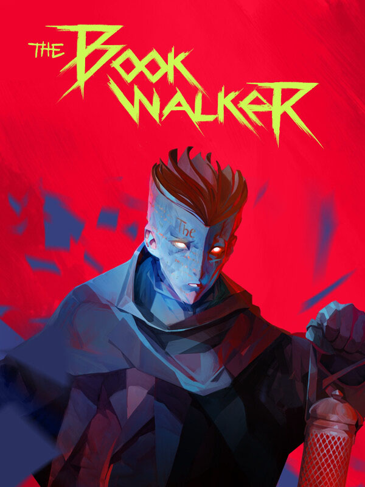

The Bookwalker
The Bookwalker
Details
|  | |
| Playtime | Not Played |
| Last Activity | Never |
| Added | 11/11/2024 2:18:11 |
| Modified | 18/05/2025 0:56:01 |
| Completion Status | Not Played |
| Library | Steam |
| Source | Steam |
| Platform | PC (Windows) |
| Release Date | 22/06/2023 |
| Community Score | 74 |
| Critic Score | 80 |
| User Score | |
| Genre | Adventure Indie Puzzle Role-playing (RPG) Turn-based strategy (TBS) |
| Developer | Do My Best |
| Publisher | tinyBuild |
| Feature | Single Player |
| Links | Steam Official Discord Epic GOG Twitch |
| Tag | Adventure Atmospheric Dark Fantasy Detective Drama Dystopian Exploration First-Person Isometric Lore-Rich Mystery Narration Noir Point & Click Puzzle Singleplayer Story Rich Surreal Thriller Visual Novel |
Description

Steal legendary artifacts to regain your freedom
Etienne Quist, a once-acclaimed writer, loses his ability to write after he is found guilty of an unspeakable crime. In an attempt to reclaim his lost status, he is approached by a criminal boss with a cunning offer. All he needs to do is locate and steal a series of legendary items from books. Delve into remarkable book worlds, each with its unique rules and challenges. Should anyone stand between you and the artifacts, be prepared to persuade, deceive, or even engage them in combat.
Explore different books and reshape their stories
Each quest thrusts you into an entirely new world: medieval prison, snow-capped mountain, futuristic spaceship and more. Meet the inhabitants of each book and use them to achieve your goals — after all, they are not really alive... or are they? In your quest, you will not be alone, as your paths cross with a sentient caged page, whom you adopt as your partner-in-crime and trusted advisor.